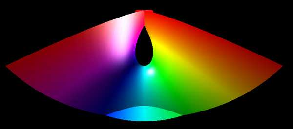

x = u - u3 / 3 + u v2
y = v - v3 / 3 + v u2
z = u2 - v2
-2 <= u <= 2, -2 <= v <= 2
Named after Alfred Enneper, a German mathematician,
who published the surface around 1863.

The Enneper surface is a minimal surface with two straight lines on
the surface. It is also "complete", that is, it can be extended forever
in all directions.